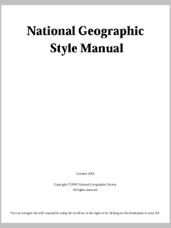
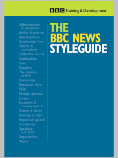

Style guides and writing today¶
One of the most overlooked contributions of the Internet to the world today is the freedom to write and publish. Everyone now has the opportunity to write and share their stories and ideas to the world. Two decades ago, would-be writers shyly kept a sheaf of yellow pad with unintelligible scribbles shared only to their nearest and dearest who would never LOL(sic) at their efforts at a short story or poem. Today, writing is no longer categorized to feature/creative and technical writing. Thanks to Twitter, Amazon Kindle Direct, Smashwords, blogs, e-mails, websites and yes, worldwide access to every imaginable type of code, everyone is emboldened to clack/tap away at a keyboard or touchscreen and in milliseconds find their words/code published and readily available to the world.
In this day and age of 140 character “tweets”, marketing material composed of HTML5, Flash, and PHP, freely editable wikis, and articles composed mostly of 600x400 PNGs or JPEGs, what are style guides for? Are these books and guides reserved for the professional or the industry adept? Are they remnants of the golden age of writing back when Encyclopedia Brittanica was beloved and children lugged around several books on their backs instead of a laptop or tablet?
In this day and age of 140 character “tweets”, marketing material composed of HTML5, Flash, and PHP, freely editable wikis, and articles composed mostly of 600x400 PNGs or JPEGs, what are style guides for? Are these books and guides reserved for the professional or the industry adept? Are they remnants of the golden age of writing back when Encyclopedia Brittanica was beloved and children lugged around several books on their backs instead of a laptop or tablet?
A style guide is one of the best tools of any writer - professional or otherwise. There are style guides specific to an industry, institution or field such as aeronautics, education, publishing, politics and IT. The BBC has separate style guides for BBC Radio and BBC News. National Geographic, Discovery, Novell SUSE and IBM have their internal guides for technical communicators. Microsoft has several style guides for user interface, code and documentation. The bible (and this author’s personal favorite) of most publishing professionals is the immortal Chicago Manual of Style, an unwieldy, comprehensive but truly indispensable tome.
The Internet is a fun place to write because it’s so easy to shift from one tone to another. The web is a great place to address a different audience daily and writers can be free of any restrictions to tone or voice. However, the Internet is also a great place to improve rhetoric, grammar and language usage. And a style guide does have its place even in the wild, wild west of the Internet where 7-8 characters and symbols of random text constitute a story or question.
I look at a style guide not as a rule book but as a mentor that sits beside me (or rather stored in my iPod, iPad or netbook) and reminds me that there is always a better way to write text. It’s so easy to believe one’s grammar is infallible or to chalk up a poorly written sentence as a result of “creativity”. There’s always room to improve any block of text. A style guide keeps an editor honest against their will. Editors (and managers) I’ve encountered often believe there’s only way to write (i.e. their way or the “old way”). Self-proclaimed authors (which includes bloggers and fan fiction writers) believe that their style is superior to those who have come before - better than Hemingway, Conan Doyle, T.H. White, Maupassant, Poe and Twain. And yet they themselves have no personal style guide to adhere to.
When an African, Jamaican or Japanese speaks English, there’s a lovely almost ethereal rhythm to their choice of words and when they put it to paper/web, it shows. A style guide doesn’t remove that distinct flavor but ensures that the text is universal nonetheless. The English language has evolved and so has writing. There is an element in any type of writing that defines the author though the text should avoid straying far from the audience, tone and theme. Unlike the old days, writing isn’t easily classified as formal or informal (is a tweet formal or informal? how about a blog post?). A style guide keeps the writer in line and maintains consistency regardless of platform, medium or objective.
A recent visit to a forum for professional technical writers left a bad taste in my mouth when an American technical writer blasted an Indian for his poor grammar. He cited grammar rules, race, education and his years of experience as a professional. His written missives were derided by everyone else on the forum - no amount of “grammar expertise” can replace taste and tone. It’s easier to catch and avoid a verbal Freudian than prevent oneself from typing words online that people will never forget. The American should have used a style guide on “courtesy” that day.
All writers should have their own internal style guide that keeps them true and lets their language and skill shine. Once put to paper, a personal writing style guide doesn’t need to be as long as the AP Style Guide - it could be just five reminders to write in this way or that way. An example could be the spelling of e-mail/email or the formatting of PHP code (mono or italics). Another could be a reminder not to use too much popular culture references or colloquialisms. At the end of the day, a style guide should enhance the text and in the end, enhance the writer.